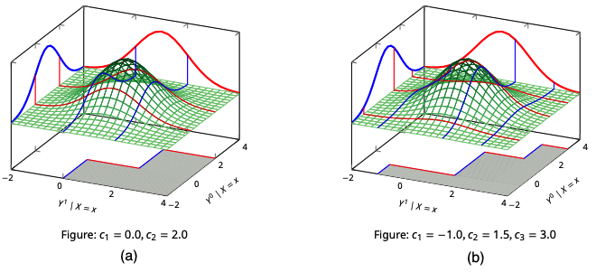

Research
Efficient estimation of effects from modified stochastic interventions,
Stochastic (soft) interventions provide fine-grained ways to modify treatment assignment via probabilistic or functional shifts. I study query formulation, interpretability, and efficient estimation under such interventions.
We present two families of cost-aware interventions that generalize incremental propensity score interventions (IPI) for discrete treatments \(A\in\mathcal{A}=\{\alpha_1,\dots,\alpha_K\}\) with costs \(c(\alpha_k)\geq 0\). A scalar \(\delta\in\mathbb{R}\) defines interpolations from the organic propensity \(\pi\) or a target policy \(\nu\) toward a product-of-experts blend: \[ \begin{aligned} \pi^*_\delta(a\,|\, w) &= \frac{(\zeta_\delta+\xi_\delta(a))\,\pi(a\,|\, w)}{\sum_{a'\in\mathcal{A}}(\zeta_\delta+\xi_\delta(a'))\,\pi(a'\,|\, w)},\\ \nu^*_\delta(a\,|\, w) &= \frac{\nu(a)-\xi_\delta(a)(1-\pi(a\,|\, w))}{\sum_{a'\in\mathcal{A}}(\zeta_\delta+\xi_\delta(a'))\,\pi(a'\,|\, w)}, \end{aligned} \]
where \(\xi_\delta(a) :=\nu(a)\left(1-e^{-\delta c(a)}\right)\) and \(\zeta_\delta :=\sum_{a'\in\mathcal{A}}\nu(a')\,e^{-\delta c(a')}\)

We derive the efficient influence function, under a nonparametric model, of the expected outcomes under these interventions: \(\mathbb{E}[Y^{\pi^*_\delta}]\) and \(\mathbb{E}[Y^{\nu^*_\delta}]\), respectively, and implemented respective Newton-Raphson one-step estimators.
Papers:
- Upcoming.
Questions I am thinking about:
- How can cost-aware stochastic interventions be embedded in resource-constrained decision problems (budgets, deployment costs)?
Graphical models for causal inference under selection and mechanism shift,
We develop graphical models that encode selection, missingness, attrition, and mechanism shifts.
Consider a point exposure variable \(A\), outcome \(Y_1\) and confounders \(W\) and \(Y_0\) (a lagged, pre-exposure outcome). Some units may have \(Y_0\) missing (\(R_{Y_0}=0\)). If the missingness reflects that the unit itself lacks access to \(Y_0\) (or \(Y_0\) was not realized), downstream mechanisms can change because \(Y_0\) cannot inform either \(A\) or \(Y_1\) for them. Standard missing data graphs (\(m\)-graphs) cannot represent these shifts. We introduce an augmented graphical model, \(lm\)-graphs, that explicitly encodes such shifts and supports identification analysis.

In this graph, the full average treatment effect (FATE) can be recovered as: \[ \Delta_a\mathbb{E}[Y\mid \operatorname{do}(A=a,R_{Y_0}=1)] = \mathbb{E}_W\mathbb{E}_{Y_0|W,R_{Y_0}=1}\Delta_a\mathbb{E}[Y\,|\,W,Y_0,A=a,R_{Y_0}=1], \]
and the natural average treatment effect (NATE) as: \[ \begin{aligned} \Delta_a\mathbb{E}[Y\mid \operatorname{do}(A=a)] =& \mathbb{P}(R_{Y_0}=0)\,\mathbb{E}_{W|R_{Y_0}=0}[Y\,|\,W,A=a,R_{Y_0}=0]\\ &+ \mathbb{P}(R_{Y_0}=1)\,\mathbb{E}_{W,Y_0|R_{Y_0}=1}[Y\,|\,W,Y_0,A=a,R_{Y_0}=1]. \end{aligned} \]
Papers:
- de Aguas, Henckel, Pensar, Biele (2025). Causal inference amid missingness-specific independencies and mechanism shifts. UAI proceedings.
- de Aguas, Pensar, Varnet-Pérez, Biele (2025). Recovery and inference of causal effects with sequential adjustment for confounding and attrition. Journal of Causal Inference
Questions I am thinking about:
- How do the fundamental limits of statistical testability in missing-data models shape identification and inference in causal systems represented by \(lm\)-graphs?
- How context-specific independencies (CSI) impact the construction of regular parametric submodels and the feasibility of efficient estimators (e.g., TMLE)?
Partial identification of causal and counterfactual queries,
We study how shape constraints can enable point or partial identification for causal and counterfactual parameters.
For instance, with a binary point exposure \(A\), a continuous outcome \(Y\), and pre-exposure stratification variable \(X\), one can define the probability of tiered benefit, given cutoffs \(c=\{c_k\}_{k=1}^{K-1}\), as: \[ \operatorname{PB}_c(x) = \sum_{k=1}^{K-1}\mathbb{P}(Y^0\in (c_{k-1},c_k],Y^1>c_k\,|\,X=x). \]

Under strong monotonicity, i.e. \(\mathbb{P}(Y^1-Y^0\geq 0\,|\,X=x)\in\{0,1\}\), this parameter is point identified when \(K=2\) provided \(P(Y\,|\,X,\operatorname{do}(A=a))\) is identified. For \(K\geq 3\), monotonicity is insufficient and additional shape constraints are needed –or a shift to a partial identification strategy.
We investigate how shape constraints can yield informative bounds for such counterfactuals and how to estimate them efficiently, noting that extremum-type functionals often lead to nonregular estimators.
Papers:
- de Aguas, Krumscheid, Pensar, Biele (2025). The probability of tiered benefit: Partial identification with robust and stable inference. CLeaR proceedings.
Questions I am thinking about:
- When do shape constraints deliver tighter or more interpretable bounds than optimal transport (OT) -type bounds?
Econometric analysis of regional and network drivers of development.
I have worked at the intersection of econometrics, networks, financial economics, and regional development; often translating analyses into interactive tools. Selected projects include:
- Belief and participation cycles in equity markets: analyzed entry–exit dynamics where belief cycles drive participation cycles (Shinny app).
- Asset prices and portfolio choice in OLG models: studied asset-price and portfolio-choice dynamics in overlapping-generations settings; built an interactive visualization (Shinny app).
- US-Latin America trade flows: measured and visualized bilateral trade exposure and dynamics (Shinny app).
- Regional competitiveness in Colombia: constructed and benchmarked competitiveness indices for Colombian departments (Shinny app).
- Network and peer effects in sustainable agriculture: used game-theoretic models to study regional adoption and contagion processes (Master’s thesis).